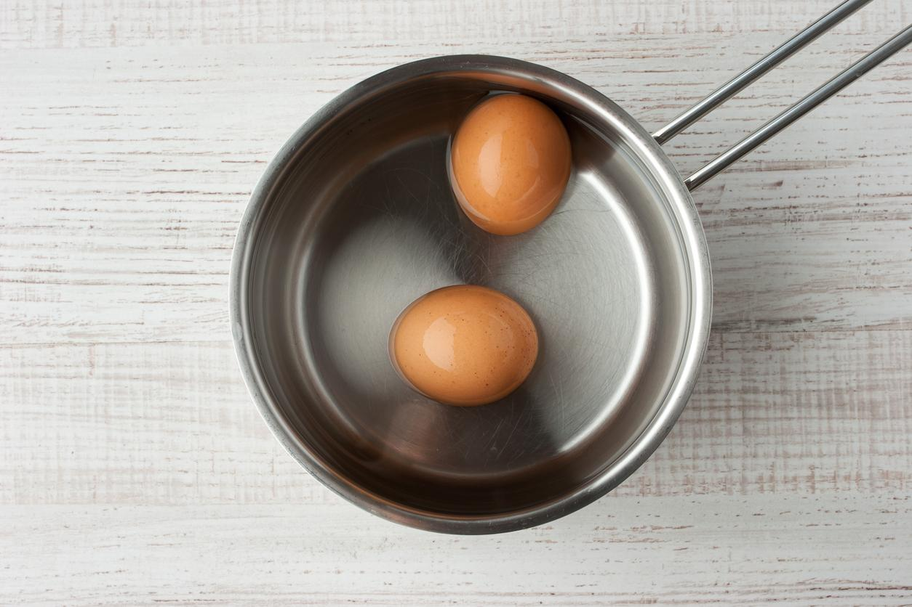

La principal característica de este plato tradicional japonés es el caldo elaborado a base de carne, especialmente pollo o cerdo, junto con otros ingredientes que veremos en este artículo. Protagonista del manga, el anime japonés y la cultura pop, este plato seduce por su exquisito aroma y los sabrosos fideos. Si quieres saber cómo preparar sopa ramen de pollo continúa leyendo este artículo de unCOMO, donde te ayudamos a elaborar la receta nipona más auténtica.
Añade el pollo a la sartén y deja que adquiera un tono dorado durante poco más de 5 minutos. Dale la vuelta para que se cocine por el otro lado y al terminar introduce el pollo en el horno durante unos 15 minutos. Recuerda que el pollo será la base de nuestro ramen japonés. Pasado el tiempo retira el pollo del horno y resérvalo en un recipiente aparte.
Ahora que ya tenemos los dos ingredientes principales para preparar la receta de sopa ramen de pollo,
podemos empezar a preparar los demás alimentos que le acompañan y que hacen de él un plato único. Para
empezar,
Podemos aprovechar el rato que los huevos tardan en cocerse para llenar un cuenco con agua fría. Una vez pasados los 8 minutos introducimos los huevos en el recipiente de agua fría para detener la cocción, pero dejamos el agua y la olla hirviendo (en el siguiente punto explicamos por qué). Cuando detectemos los huevos están apenas calientes, podemos retirar la cáscara y cortarlos por la mitad. Al igual que con el pollo anteriormente, los reservamos hasta que los demás ingredientes del ramen de pollo japonés estén listos.
